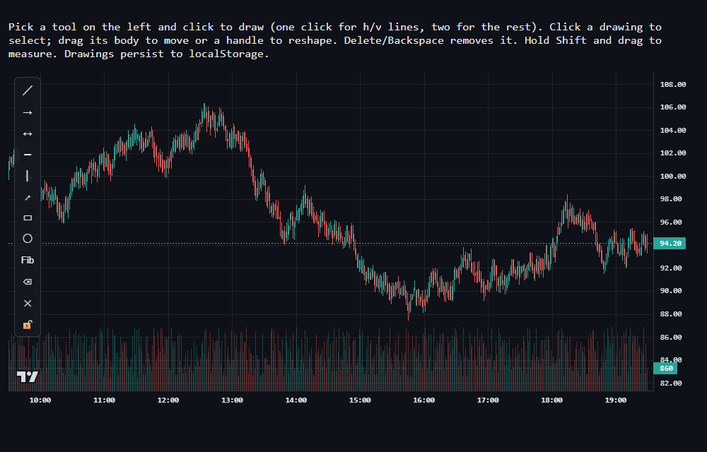
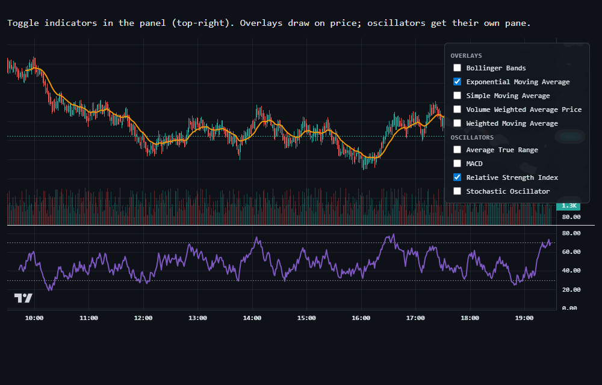
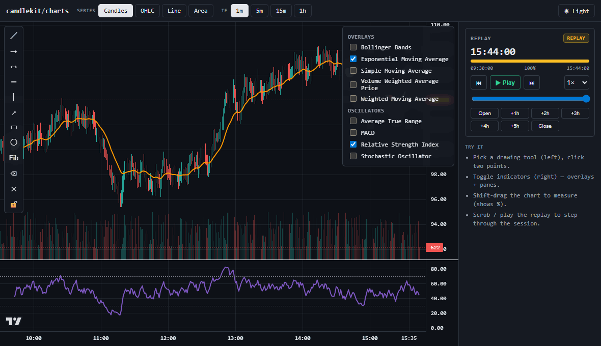

The orchestration layer lightweight-charts leaves out — drawing tools, indicators, measurement, and deterministic replay — in one tree-shakeable, framework-agnostic package.



# one peer dependency — no git URLs, no copyleft
npm install @candlekit/charts lightweight-charts